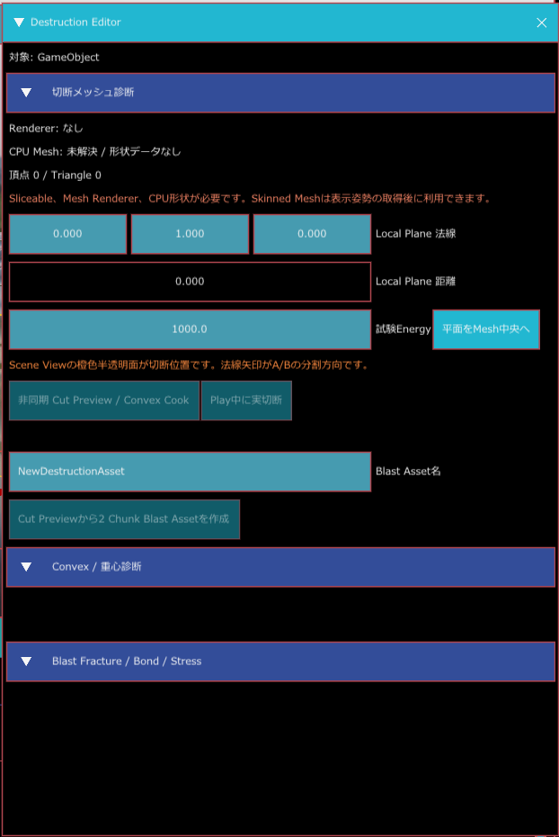

破壊（Sliceable / Destructible）
RePlayEngine には、実行中のメッシュを平面で二分する Sliceable と、事前に分けた破片を爆発ダメージで離す Destructible があります。どちらも破片メッシュの生成と PhysX の凸形状作成をバックグラウンドで行い、完了した結果をゲーム中のシーンへ反映します。
こんなときに使う
- 剣やレーザーが通った位置で、モデルを切り分けたいとき（Sliceable）
- 爆発の中心と強さに応じて、建物や小道具の破片を順に離したいとき（Destructible）
- 切断面の色、破片の重さ、分離の勢い、破片数を調整したいとき
- 現在のビルドでどこまで使えるか、エディター操作や C# 連携を始める前に確かめたいとき
2 つの方式
| 部品 | 切り分け方 | 向いている使い方 | 入力 API |
|---|---|---|---|
| Sliceable | 実行時に 1 枚の平面を与え、元のメッシュを 2 つに切る | 剣・レーザー・切断可能な小道具 | Slice(plane, cutting_energy) |
| Destructible | 用意済みの Chunk と Bond のつながりを Damage でほどく | 爆発で壊れる壁・柱・大きな破片 | ApplyRadialDamage(center, radius, damage, inner_radius) |
Sliceable は呼び出すたびにその時点の破片をもう一度切れます。Destructible は実行前に Destruction Asset に入れておいた破片と接続情報を使います。実行時に任意の新しい破砕パターンを作る機能ではありません。
Destruction Editor（試験用パネル）
Window > Destruction Editor で開く、切断と破砕を試すためのパネルです。階層パネルで選んでいる GameObject が対象で、何も選んでいないと「HierarchyでGameObjectを選択してください。」と出ます。パネルは 3 つの折りたたみ（切断メッシュ診断、Convex / 重心診断、Blast Fracture / Bond / Stress）でできています。

切断メッシュ診断
| 項目 | 説明 |
|---|---|
| Renderer / CPU Mesh / 頂点・Triangle | 対象の Renderer の種類（Static Mesh か Skinned Mesh）と、切断に使う形状データが読めているか、頂点数と三角形数を表示します。緑色で「候補があります」と出れば切れる状態、橙色なら足りない物があります |
| Local Plane 法線 | 切る平面の向き（対象のローカル座標）。既定は 0, 1, 0（上向き。水平に切る） |
| Local Plane 距離 | 平面の位置。法線方向へ、原点からの距離で入れます |
| 試験Energy | 切るときの「力」の値（既定 1000）。Sliceable の切断抵抗以上でないと切れません |
| 平面をMesh中央へ | 平面の距離を、メッシュの中心を通る位置に合わせます。対象を選ぶと、はじめから中央に合っています |
| 非同期 Cut Preview / Convex Cook | 実際には切らずに、切ったらどうなるかを別スレッドで計算します。結果として、できる 2 つの破片（A / B）の三角形数、切断面の輪の数、凸包（Convex）の頂点数、かかった時間（ms）が出ます。失敗すると理由が出ます |
| Play中に実切断 | ゲームの実行中だけ押せます。この平面でその場で切り、対象のメッシュを 2 つの破片に置き換えます。結果は「実切断:」の行に、受け付け・待機・完了・失敗の理由が色つきで出ます |
| Interior Material | 切断面に使われるマテリアル名（Sliceable か破壊材質で決まります） |
| Blast Asset名 | 作る破砕アセットの名前（既定 NewDestructionAsset）。使えない文字は置き換えられ、同名のファイルがあるときは番号が付きます |
| Cut Previewから2 Chunk Blast Assetを作成 | Cut Preview が成功したあとに押せます。切った 2 つの破片（Chunk）と、その間の接続（Bond）を持つ .replaydestruction を、Project パネルで開いているフォルダーに保存し、AssetDatabase へ登録します。元のメッシュと 2 つの破片の合計が 64 MiB を超えるとは作れません |
シーンビューには、切断の位置が橙色の半透明の面で出ます。法線の矢印が、破片 A と B に分かれる向きです。
Convex / 重心診断
対象に Convex Collider があると、入力頂点の数、凸包を作っている最中か、できあがっているか、頂点数・記憶量・バウンディングボックスを表示します。Cut Preview のあとには、重心（ローカルとワールド）、メッシュの体積、Rigidbody があれば質量と箱に近似した慣性も出ます。
Blast Fracture / Bond / Stress
対象に Destructible があり、Destruction Asset が割り当てられているとき、Chunk・Bond・Actor Group・PhysX Actor の数、耐久値を超えた Bond の数、Stress の計算の状態、Bond の一覧とグラフを表示します。
- Blast試験半径、Blast試験Damage：試験の爆発の大きさと強さ。
- Play中にBlast Damageを試す：ゲームの実行中だけ押せます。対象の位置を中心に、その半径と Damage で爆発させます。
使い方の例：モデルを切って、破砕アセットを作る
- モデルを置いた GameObject（Mesh Renderer 付き）に、コンポーネントを追加 > Destruction > Sliceable を付けます。
- Window > Destruction Editor を開き、その GameObject を階層パネルで選びます。「候補があります」と緑色で出ることを確かめます。
- Local Plane 法線 と 距離 を変えて、シーンビューの橙色の面が、切りたい位置に来るように調整します。
- 非同期 Cut Preview / Convex Cook を押します。三角形数などが出れば、その平面で切れます。
- 切った結果をゲームで確かめたいときは、ゲームを実行（F5）して Play中に実切断 を押します。
- 破砕アセットにしたいときは、Cut Preview のあとで Blast Asset名 を入れ、Cut Previewから2 Chunk Blast Assetを作成 を押します。Project パネルに
.replaydestructionが増えます。 - 爆発で壊れる物にするには、対象に Destructible を付け、Destruction Asset に作ったファイルを割り当てます。実行して Play中にBlast Damageを試す で試せます。
Sliceable
Static Mesh または Skinned Mesh を平面で切り、切断面をふさいだ 2 つのメッシュにします。切断に成功すると、元の GameObject と新しい GameObject に形状が分かれます。Skinned Mesh は切断時の表示姿勢を静的メッシュとして取り込みます。
インスペクターの項目
| 項目 | 既定値 | 説明 |
|---|---|---|
| 切断可能 | オン | オフにすると CanSlice() は false を返し、切断要求を受け付けません。 |
| 破壊材質 | 未設定 | .replaydestructionmaterial を割り当てます。設定すると材質側の密度、切断抵抗、切断面マテリアル、効果音・VFX の参照を使います。 |
| 最小破片体積 | 0.0005 | できた破片がこの値より小さく、かつ「破片の物理化しきい値」より大きい場合、その切断結果は適用されません。物理化しきい値以下の小片は物理なしで残せます。 |
| 最大破片数 | 32 | 最初のメッシュを含めた破片数の上限です。範囲は 1〜4096。切断で作られる子の部品も同じ上限を共有します。 |
| 切断面マテリアル | 未設定 | 新しくできる切断面のマテリアルです。破壊材質側にも設定がある場合はそちらが使われます。 |
| 密度 | 500 | 破片の体積から Rigidbody の質量を求める値です。破壊材質を割り当てた場合は、そちらの密度が優先されます。 |
| 切断抵抗 | 0 | cutting_energy がこの値に届かない切断を拒否します。破壊材質を割り当てた場合は材質側の値が優先されます。 |
| 破片の物理化しきい値 | 0.0001 | これ以下の体積の破片には動的 Collider と Rigidbody を付けず、細かな破片が物理計算を増やしすぎるのを防ぎます。 |
| 切断 Cooldown | 0.15 秒 | 同じ破片を続けて切るまでの待ち時間です。 |
| 破片の分離 Impulse | 0.5 | 切断面の法線方向へ、2 つの破片を分ける初速を与えます。 |
準備と呼び出し
- Hierarchy で対象を選び、Inspector の コンポーネントを追加から Sliceable を検索して追加します。
- 対象には Mesh Renderer または Skinned Mesh Renderer のどちらか 1 つを付けます。Skinned Mesh の場合は Renderer を表示状態にします。
- 切断面マテリアル、密度、上限を設定します。必要なら破壊材質を割り当て、切断抵抗と効果音などをまとめて管理します。
- ゲーム側の C++ コードから、ワールド座標で切断平面を作って
Slice()を呼びます。成功の戻り値は「処理を受け付けた」ことを示し、メッシュ更新完了は後のフレームになります。
#include "RePlayEngine/Components/Destruction/SliceableComponent.h"
#include "RePlayEngine/Destruction/DestructionTypes.h"
// object は Sliceable を追加した対象の GameObject。
auto* sliceable = object.GetComponent<ReplayEngine::Components::SliceableComponent>();
ReplayEngine::Destruction::SlicePlane plane;
plane.normal = { 0.0f, 1.0f, 0.0f }; // 平面の向き（法線）
plane.distance = 0.0f; // n・位置 = distance の平面
if (sliceable != nullptr && sliceable->Slice(plane, 100.0f))
{
// 処理を受け付けた。完了後にシーンへ 2 つの破片が反映される。
}
else if (sliceable != nullptr)
{
// StatusMessage() で失敗理由を確認する。
}切断中の状態は StatusMessage() で調べられます。CanSlice() は有効状態、クールダウン、破片上限、メッシュ読み込み、物理バックエンドなどをまとめて確認します。
Destructible
Destruction Asset に保存された Chunk（破片形状）と Bond（破片同士の接続・耐久値）を読み込み、半径 Damage または Stress Force で接続を切ります。分離後は、破片グループごとに凸 Collider を作って Rigidbody を付けます。
インスペクターの項目
| 項目 | 既定値 | 説明 |
|---|---|---|
| Damage を受ける | オン | オフにすると Damage 呼び出しを受け付けません。 |
| Destruction Asset | 未設定 | .replaydestruction を割り当てます。Chunk のメッシュ、体積、Bond の接続、耐久値を持ちます。 |
| 破壊材質 | 未設定 | 密度、爆発倍率、破壊靭性、衝撃抵抗、音・VFX の参照を共有します。 |
| 密度 | 500 | 破片グループの体積から動的 Rigidbody の質量を求めます。破壊材質の密度がある場合はそちらが優先されます。 |
| 爆発 Damage 倍率 | 1 | 受け取った Damage に掛けます。さらに破壊材質の爆発倍率と破壊靭性で補正されます。 |
| 動的破片の最小体積 | 0.001 | これ未満のグループは動的 Actor にしません。 |
| 動的 Actor 上限 | 64 | 一度の破砕で動的物理にするグループ数の上限です。上限を超えたグループは静的な形状として残ります。 |
DestructionMaterialAsset::SaveToFile() で作成・保存します。音・VFX・マテリアルの参照は Asset GUID で指定します。#include "RePlayEngine/Destruction/DestructionMaterialAsset.h"
ReplayEngine::Destruction::DestructionMaterialAsset material;
material.name = "Wood";
material.density = 500.0f;
material.fracture_toughness = 1.0f;
material.cut_resistance = 10.0f;
material.blast_damage_multiplier = 1.0f;
std::string error;
material.SaveToFile(asset_path, error); // .replaydestructionmaterial で保存準備と呼び出し
- Destruction Asset を用意します。Destruction Editor の Cut Previewから2 Chunk Blast Assetを作成 で、1 回の平面カットから 2 Chunk と 1 Bond のアセットを作れます（C++ の
PrefracturedDestructionAsset::FromPlaneCut()と同じ処理です）。それ以上に細かく割ったアセットを作る画面はありません。 - 対象の元メッシュに Mesh Renderer と Destructible を付け、Inspector の Destruction Asset にファイルを割り当てます。
- ゲームを実行し、爆発のワールド位置・半径・Damage を指定して
ApplyRadialDamage()を呼びます。 - 呼び出しが true でも破片の物理化は非同期です。分離した結果は後続フレームで反映されます。
#include "RePlayEngine/Destruction/RuntimeMeshSlicer.h"
#include "RePlayEngine/Destruction/Blast/PrefracturedDestructionAsset.h"
// intact は閉じた元メッシュ。plane は RuntimeMeshSlicer へ渡す切断面。
auto cut = ReplayEngine::Destruction::RuntimeMeshSlicer::Slice(intact, plane);
ReplayEngine::Destruction::PrefracturedDestructionAsset asset;
std::string error;
if (cut.success && cut.warning.empty() &&
ReplayEngine::Destruction::PrefracturedDestructionAsset::FromPlaneCut(
intact, cut.negative, cut.positive, plane.normal, cut.cap_material_slot,
"Wall", 1.0f, asset, error))
{
asset.SaveToFile(asset_path, error); // .replaydestruction で保存
}保存したアセットをプロジェクトのリソースフォルダーに置き、Project パネルの Refresh Assets で再読込してから Inspector の Destruction Asset へ割り当てます。生成関数が受け付けるのは閉じた破片メッシュです。
// object は Destructible を追加した対象の GameObject。
auto* destructible = object.GetComponent<ReplayEngine::Components::DestructibleComponent>();
const DirectX::XMFLOAT3 blast_center{ 0.0f, 1.0f, 0.0f }; // ワールド座標
if (destructible != nullptr &&
destructible->ApplyRadialDamage(blast_center, 3.0f, 25.0f, 0.5f))
{
// Damage は適用済み。Bond が切れた場合、物理化は後続フレームで完了する。
}radius は最大距離、inner_radius は最大 Damage が維持される中心側の距離です。単位はシーンのワールド単位です。Stress Force API の位置・力は Destructible のローカル座標で指定します。
制限と、うまくいかないとき
| 症状・条件 | 確認すること |
|---|---|
| 実行できない、または処理が始まらない | PhysX の Runtime Convex Cooking を使える Scene で、ゲーム実行中に呼び出してください。編集モードでは動作しません。 |
| Sliceable が切れない | 有効な GameObject に Mesh Renderer / Skinned Mesh Renderer の片方だけがあるか、メッシュの読込が完了しているか、Cooldown と最大破片数を確認します。Static Mesh は CPU 側の三角形データが必要です。 |
| Skinned Mesh の切断が失敗する | Renderer を表示し、実行中の姿勢取得が完了するまで待ちます。取得は最大 10 秒で打ち切られます。 |
| Sliceable の切断抵抗が足りない | cutting_energy がコンポーネントまたは破壊材質の「切断抵抗」以上か確認します。 |
| Destructible の Damage が効かない | Destruction Asset が読み込めているか、Bond が有効な Chunk 同士をつないでいるか、Damage を受けるがオンかを確認します。 |
| 破片が落ちない | 「動的破片の最小体積」と「動的 Actor 上限」を確認します。上限を超えた破片は静的形状で残ります。 |
| 極端に重い | Sliceable の「最大破片数」を下げます。切断入力は 1 回 2,000,000 三角形までです。破片ごとにメッシュ処理と Convex Cooking が発生します。 |
Slice()、ApplyRadialDamage() は C# Script API に公開されていません。Script Component を付けても呼び出し可能にはなりません。エディターの Destruction Editor は、実行中の試験用です。ゲームの中で C# から切断や爆発を起こしたいときは、先にバインディングを実装してください。